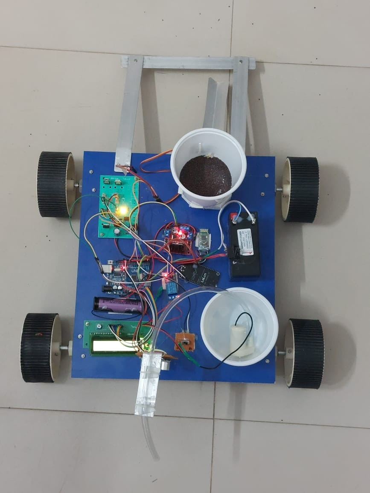
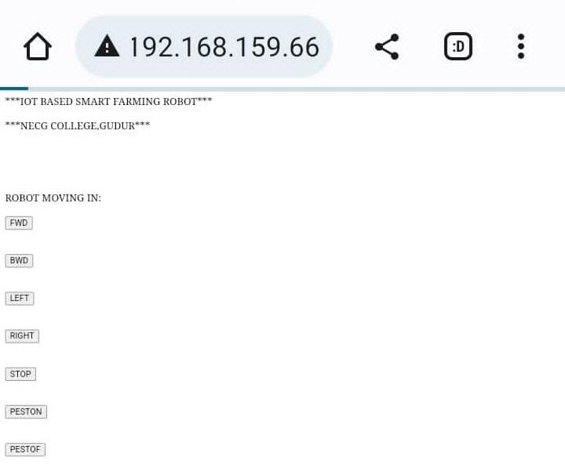

About Myprojects
Project Title
: IoT Based Home Automation System.
Abstract
:
The Home automation system differs from other system by allowing theuser to operate the system from anywhere around the world through internet connection.
In this project we present a Home Automation system (HAS) using Blynk Community.
he main purpose of thisproject is to save Electricity.
Project Title
: Remote Soil Moisture Monitoring Using SensorTechnology.
Abstract
:
Soil Moisture sensors monitoring the volumetric water content in the soil.
Measuring soil moisture is important for agricultural applications to help farmers manage their irrigation systems more efficiently.
Knowing the exact soil moisture conditions on their fields, not only are farmers able to generally use less water to grow a crop, they are also able to increase yields and the quality of the crop by improved management ofsoil moisture during critical plant growth stages.
Project Title
: IoT Based Smart Farming Robot for Agriculture.
Abstract
:
Now a days smart farming is very useful for farmers. In this project an Agribot (Agricultural Robot) which performs multiple operations simultaneously. It performs pesticides spraying, seed sowing and also ploughing and the smoothing are mechanical operations.
An ultrasonic sensor which is used to detect animals in the farm.
So, this agribot is used to reduce human intervention, ensuring high yield and efficient utilization of resources.
Result
 
Education
Certifiations